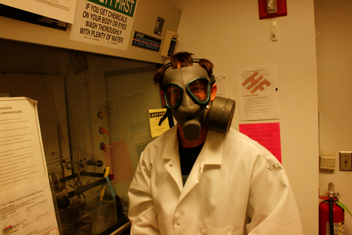

So, How Do I Make This Stuff?
The infographic on the previous page painted a neat picture for a world filled with graphene supercapacitors. What's crazy about them is that they are actually pretty simple - they can be made at home with some readily available chemicals.
Protocol for making graphene
Pre-oxidation of graphene
- Graphite flakes (2g, 45µ) are treated with formic acid (50 ml, 98%) in a round bottomed flask and ultrasonicated at room temperature at 20 Hz for 2 hours to produce a GNP/HCOOH dispersion. As seen in the table below, this acts as a pre-oxidation method on the graphite.
- The resulting graphite particles are filtered and washed with acetone. The particles are dried in a vacuum oven overnight. Note that if there is excess acetone in solution, the GNP will boil. After this step, we have achieved “GNP” -- a slightly oxidized form of graphite. See the SEM picture below of this stage.
Modified Hummer's method for oxidation: preparing graphite oxide (GO)
- The graphite particles (0.2g), thus obtained, are added to a round bottomed flask which is placed in an ice bath. We added water such that there was maximum surface area between the beaker and the cold temperature reservoir.
- Nitric acid (20ml, 69-70%) is added into the flask and the mixture is stirred continuously with a magnetic stirrer at a medium speed (200 rpm).
- Ice cold sulphuric acid (30ml, 95.5%) and then potassium permanganate (6g, 99%) is added gradually while avoiding sudden increase of the solution temperature. This stage of the mixture is thermally unstable. Be careful to add both both of these an approximately constant, slow rate.
- Remove from the ice bath; place and maintain the flask at 35°C using a water or oil bath. In this set-up we used a large water bath with heating coil and thermocouple.
As shown above, the temperature was carefully maintained by periodically adding ice to the water bath to bring the temperature back down to 35 degrees
- After magnetic stirring for 2 hours, distilled water (200ml) is poured slowly to obtain a brown colloidal suspension As pictured below:

There are purple fumes produced in this step as the water reacts with the strong acids and potassium permanganate. Make sure to wear ventilation protection. Because the original mixture is less than 0 ph, this step is critical to do extremely slowly. If you go moderately fast, the solution will spontaneously and violently precipitate out the carbon.Below is pictured the fumehood after the explosion:
- Stir for another 30 minutes, filter the dispersion with a membrane (pore size 0.45µm), wash with:
- Copious amounts of water
- 5wt% HCl solution
- Acetone
- The GOPs are dispersed in water (0.5mg/ml) to give a viscous colloid and subjected to dialysis for further purification.
- To obtain graphite oxide powder, centrifugation is carried out at a speed of 4000 rpm for 1 hour followed by drying over phosphorus pentoxide at 40°C for a week in a vacuum desiccator.
Reduction of GOP to graphene via laser scribing
- Surface-mount a substrate (aluminum foil) to a light-scribe DVD.
- Carefully protect the inside of the LightScribe DVD with tape before spreading GOP into surface.

- Next, take the GOP suspended in water and distribute it as thinly as possible onto the surface of the lightscribe DVD. Let this dry in a de-oxygenated environment, like a vaccuum oven.
- The final step is to use a DVD burner to reduce the graphite oxide particles to graphene.
The final product that is created is has high electrical conductivity and specific surface area, which what makes it such an excellent material for anodes of capacitors and batteries.
As shown above, the temperature was carefully maintained by periodically adding ice to the water bath to bring the temperature back down to 35 degrees
There are purple fumes produced in this step as the water reacts with the strong acids and potassium permanganate. Make sure to wear ventilation protection. Because the original mixture is less than 0 ph, this step is critical to do extremely slowly. If you go moderately fast, the solution will spontaneously and violently precipitate out the carbon.Below is pictured the fumehood after the explosion:
- Copious amounts of water
- 5wt% HCl solution
- Acetone
The final product that is created is has high electrical conductivity and specific surface area, which what makes it such an excellent material for anodes of capacitors and batteries.